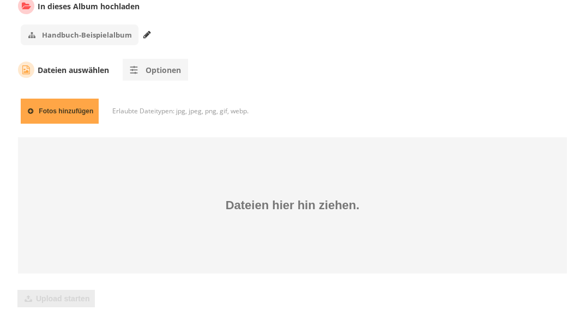
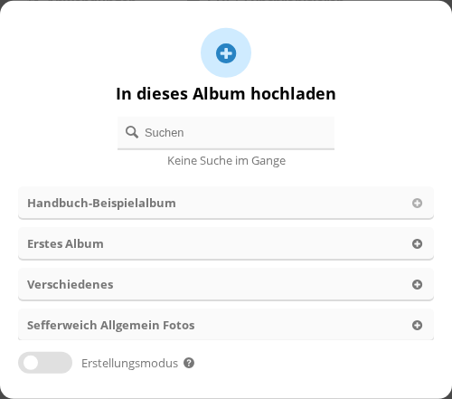
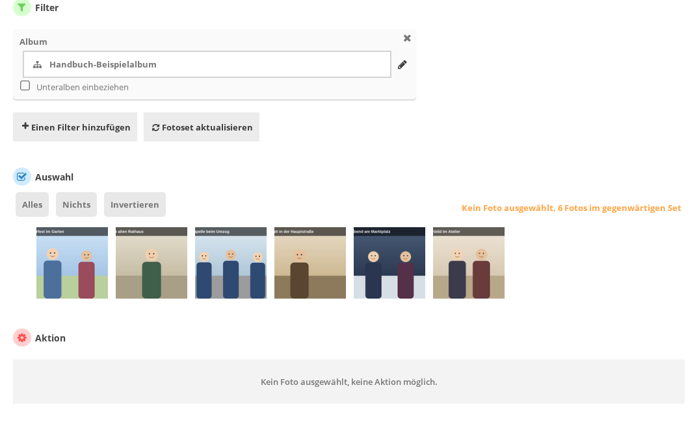
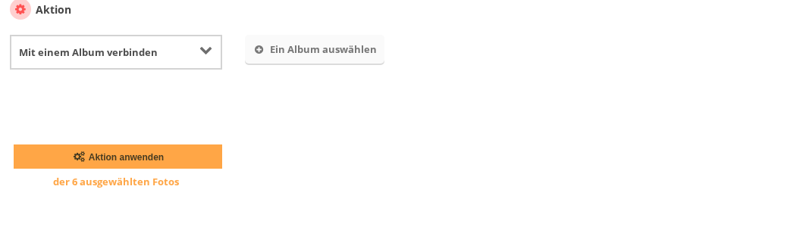
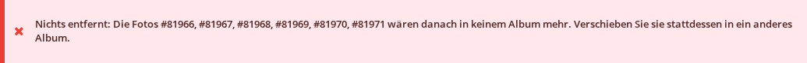

Fotos hochladen und weiteren Alben zuordnen dürfen nur Administratoren. Hochgeladen wird im
Browser unter Verwaltung » Fotos » Hinzufügen
(admin.php?page=photos_add); ein Foto kann danach weiteren Alben zugeordnet
werden, ohne es erneut hochzuladen.
Fotos hochladen
Verwaltung » Fotos » Hinzufügen öffnen. Aus der
Albenliste führt auch die Schaltfläche Fotos hinzufügen in der Zeile eines
Albums direkt dorthin, mit diesem Album bereits ausgewählt.
Unter In dieses Album hochladen prüfen, welches Album eingetragen ist.
Auf Fotos hinzufügen klicken und die Dateien auswählen, oder die Dateien
auf die Ablagefläche (Dateien hier hin ziehen.) ziehen.
Auf Upload starten klicken. Die Schaltfläche ist erst aktiv, wenn
mindestens eine Datei ausgewählt ist. Während der Übertragung kann der Vorgang mit
Abbrechen beendet werden. Dateien, die schon vollständig übertragen sind,
bleiben im Album; angefangene werden verworfen. Schlägt eine Datei fehl, meldet die
Seite eine Zeile Fehler bei Datei »name« : Grund; die übrigen Dateien laufen weiter.

Der Upload. Über der Ablagefläche stehen das Zielalbum und die Schaltfläche Fotos hinzufügen, rechts daneben die erlaubten Dateitypen.
Nach dem Upload meldet die Seite ... Fotos hochgeladen und darunter
Album ... enthält jetzt ... Fotos, wobei der Albumname ein Link zu den
Eigenschaften des Albums ist. Dazu erscheinen zwei Links: Dieses Set von ... Fotos verwalten
öffnet die eben hochgeladenen Fotos in der Stapelverarbeitung,
Ein weiteres Fotoset hinzufügen beginnt von vorn. Die Fotos sind sofort im
Album sichtbar.
Erlaubt sind jpg, jpeg, png, gif und webp. Andere Dateien
weist Piwigo ab. Die Liste steht auch rechts neben der Schaltfläche
Fotos hinzufügen. Eine einzelne Datei darf bis zu 1000 MB groß sein.
Die Schaltfläche Optionen blendet einen Schalter ein: Wenn ein Foto in
diesem Album denselben Dateinamen hat, aktualisieren Sie die Datei, ohne die Eigenschaften
des Fotos zu ändern. Damit wird eine bestehende Bilddatei ersetzt. Der Titel des Fotos
bleibt immer erhalten. Bei Info-Text, Datum, Schlagworten und Personenmarkierungen gilt für
jedes Feld einzeln: Enthält die neue Datei den Wert (Info-Text, Datum, markierte
Schlagworte, Personenmarkierungen), gilt der Wert aus der Datei. Sonst bleibt der Wert der
Galerie und wird in die neue Datei geschrieben. Ein markierter Mensch behält sein Schlagwort,
auch wenn die Datei es nicht nennt. Ist der Schalter aus, entsteht ein
zweites Foto, es sei denn, die Datei ist genau dieselbe wie die eines vorhandenen Fotos; dann
wird nur das vorhandene Foto dem Album zugeordnet.
Dieselbe Regel gilt für ein neues Foto: Trägt die hochgeladene Datei Info-Text, Datum,
markierte Schlagworte oder Personenmarkierungen, übernimmt die Galerie sie beim Upload.
Ein Einlesen von Hand ist dafür nicht nötig.
Haben mehrere Fotos des Albums den hochgeladenen Dateinamen, ersetzt Piwigo keines davon.
Die Seite meldet dann zum Beispiel Nichts ersetzt: Die Fotos #12, #15 dieses Albums
haben alle den Dateinamen „bild.png“. Eines der Fotos umbenennen oder löschen und den
Upload wiederholen.
Ein anderes Zielalbum wählen
Auf den Stift neben dem Albumnamen klicken.
Im Dialog In dieses Album hochladen das Album aus der Liste wählen oder
oben im Feld Suchen nach seinem Namen suchen.
Ist das gewünschte Album noch nicht vorhanden, den Schalter
Erstellungsmodus einschalten. Damit lässt sich ein Album direkt in diesem
Dialog anlegen und auswählen.

Die Albumauswahl mit Suchfeld und Erstellungsmodus.
Vorhandene Fotos einem weiteren Album zuordnen
Ein bereits hochgeladenes Foto kann in mehreren Alben erscheinen. Die Zuordnung geschieht in
der Stapelverarbeitung (admin.php?page=batch_manager).
Verwaltung » Fotos » Stapelverarbeitung öffnen.
Unter Filter über Einen Filter hinzufügen den Filter
Album wählen und das Album eintragen, aus dem die Fotos stammen. Mit
Unteralben einbeziehen gehören auch die Fotos der Unteralben dazu.
Fotoset aktualisieren wendet den Filter an. Das Ergebnis ist das
Fotoset, auf das die Aktion später wirkt.
Unter Auswahl die gewünschten Fotos anklicken. Passt das Fotoset auf eine
Seite, wählt Alles alle Fotos des Sets. Bei mehreren Seiten stehen dort
stattdessen Die ganze Seite und Das ganze Set.
Nichts hebt die Auswahl auf, Invertieren kehrt sie um.
Unter Aktion den Eintrag Mit einem Album verbinden
wählen, über Ein Album auswählen das Zielalbum bestimmen und auf
Aktion anwenden klicken.

Die Stapelverarbeitung. Oben der Filter, darunter die Auswahl, unten die Aktion.

Die Aktion nennt unter der Schaltfläche, auf wie viele Fotos sie angewendet wird.
Mit einem Album verbinden ordnet das Foto einem weiteren Album zu. Die
bisherigen Alben bleiben erhalten. Soll das Foto das alte Album verlassen,
Ins Album verschieben wählen. Das Foto liegt danach im Zielalbum und in
keinem anderen mehr, außer in dem Album, in dem die Datei gespeichert ist. Bei dieser Aktion
erscheint der Bereich Herkunft der verschobenen Fotos mit drei
Möglichkeiten: Beibehalten, was das Foto bereits hat,
Leeren oder Durch die des Zielalbums ersetzen.
Von Album abtrennen entfernt das Foto aus einem einzelnen Album. Das letzte
Album eines Fotos lässt sich so nicht entfernen: Piwigo bricht ab und ändert nichts. Die
Meldung nennt die Fotos und den Ausweg, sie in ein anderes Album zu verschieben (Ins
Album verschieben).

Die Meldung, wenn Von Album abtrennen Fotos in keinem Album zurückließe. Die Fotos bleiben, wo sie sind.
Große Mengen ohne Browser
Sehr viele Dateien lassen sich mit Zugang zum Server per FTP im Verzeichnis
galleries/ ablegen und unter
Verwaltung » Werkzeuge » Synchronisieren einlesen. Dieses
Handbuch beschreibt den Weg nicht, nennt aber drei Fallen:
Das Einlesen akzeptiert nur Dateinamen, die ausschließlich aus Buchstaben (ohne Umlaute),
Ziffern, Punkt, Bindestrich und Unterstrich bestehen. Namen mit Umlauten oder Leerzeichen werden abgewiesen.
Dasselbe gilt für Ordnernamen: ein solcher Ordner wird als Fehler gemeldet, die Dateien
darin werden ohne eigene Meldung übergangen.
Im Abschnitt Simulation ist das Kästchen bei jedem Aufruf angehakt:
Nur Simulation durchführen, ohne Änderungen in der Datenbank vorzunehmen. Solange
es angehakt ist, zeigt der Vorgang nur an, was er tun würde, und ändert nichts.
Fehlt ein Ordner im Verzeichnis, entfernt das Einlesen sein Album. Ein Foto, dessen Datei
in einem anderen Ordner liegt und das nur in diesem Album war, bleibt erhalten: Es kommt
in das übergeordnete Album, bei einem Album der obersten Ebene in das private Album
Ohne Album, das nur Administratoren sehen. Das Ergebnis nennt die Zahl in der Zeile
... Fotos, die einem verbleibenden Album zugeordnet wurden. Fotos, deren Datei im
fehlenden Ordner lag, werden mit dem Album gelöscht.